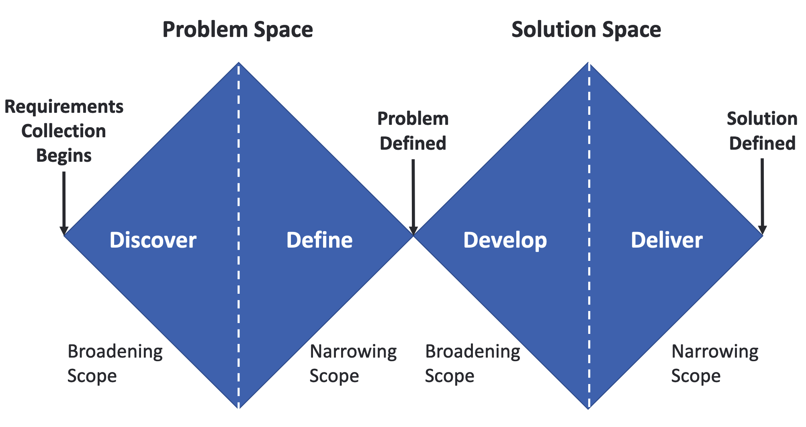
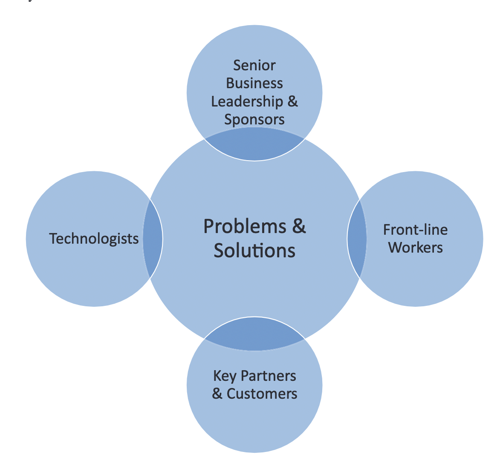

Rapid Prototyping: Leading a workshop
Mick McQuaid
2022-10-20
Week NINE
But first, a PSA from UXPA
Gayathri will share an event happening tomorrow at noon in Room 210A
But first, Group six
Design Thinking revisited
Robert Stackowiak (2020)
- Uses the Double Diamond approach to design thinking (We used the Stanford Design School’s approach on the first day of class)
- DD was first published by the UK Design Council in 2004
- The double diamond shapes refer to diverging then converging, first on the problem, then on the solution
Double Diamond approach
Double Diamond Problem Space
- Discover
- Setting scope
- Determining people / stakeholders
- Determining current state
- Define
- Converge on problem
- May substitute a new problem for the initial problem specified
- Understand why solving the problem matters
Double Diamond Solution Space
- Design / Develop
- Ideate
- Generate a lot of solutions
- Determine / Deliver
- Prioritize candidate solutions on value and effort required
- Test candidate solutions
- Converge on one solution
- Phases are nonlinear
DD Design Principles
- Put people first—start with an understanding of the people using a service: their needs, strengths, and aspirations
- Communicate visually and inclusively—help people gain a shared understanding of the problem and ideas
- Collaborate and co-create—work together and be inspired by co-workers
- Iterate—spot errors early, mitigate risk, and build confidence in ideas
Leading a prototyping workshop
This is all based on Robert Stackowiak (2020)
Steps
- Conveying what the workshop is all about
- Roles and responsibilities
- Coordination prior to the workshop
- Facilitation and independent research
- Top-of-mind industry topics
- Workshop facility and supplies
- Summary
Conveying what the workshop is all about
You need a concise statement
A diverse group of business and technology stakeholders and potential users of software and AI solutions are brought together in a Design Thinking workshop to define and prioritize the challenges that they face and collaborate in an innovative fashion to determine possible solutions to those challenges. They share a common goal of driving significant business impact. A Design Thinking workshop typically takes place over a period of one or two days.
Conveying the benefits
- Creates alignment by gathering a diverse team that breaks down silos in an organization and unifies exploration of problems and solutions
- Provides a highly interactive experience that assures engagement of all interested parties present
- Leads to new insight by collaboratively looking at problems, solutions, and potential impacts at a deeper level from many diverse points of view
Another benefit to convey
- For all engaged, creates a feeling of ownership of the problems and solutions that are identified in the workshop (each person develops a vested interest in addressing what is uncovered)
Providing the agenda (1 of 2)
- Introductions and logistics
- An introduction to Design Thinking
- Establishing diverse teams for the workshop
- A discussion/determination of the most important goal(s) of the organization
- Creating a unified vision around the goal(s)
- Choosing scope(s) to address the goal(s)
- Creating a stakeholder map and describing personas of select stakeholders
Providing the agenda (2 of 2)
- Denoting positives, negatives, and opportunities for identified scope(s) and stakeholders
- Transitioning to ideation through a “how might we” statement
- Using a creative matrix to identify possible solutions
- Placing solutions on a value-effort chart
- Creating a storyboard/visualization
- Further solution evaluation
- Road map of next steps
Roles and responsibilities
Overlap
Key Roles
- Facilitator: familiar with best practices of design thinking, skill as a coach, ability to maintain team focus, ability to assure clarity of ideas and outcomes
- Proctors: less experienced facilitators
- Scribes: collect analog content, taking notes, photos
Coordination prior to the workshop
Best practice
Best practice is pre-call between facilitator and sponsors or key participants to:
- Define workshop value and outcomes
- Set guidelines and rules for the workshop
- Confirm the right participants will be present
- Ask for additional information
Define workshop value and outcomes
Get client to agree that it’s important to disrupt work for one to two days
Get client on board with activities
- Identification of a “north star” vision of where to focus improvements in the business
- Understanding problems inhibiting success
- Defining how to measure success
- Empathizing w/ stakeholders who help or hinder success
- Aligning teams to co-create/innovate ideas that drive needed outcomes
- Prioritizing the most impactful ideas into concepts that can be realized
- Defining the business impact + visualizing the solution(s)
Set client expectation for outcomes
- A clear agreed-upon vision of the future
- An understanding of the risk in maintaining the status quo
- Alignment regarding clearly defined success criteria
- Documented business and technical challenges
- Documented views of key stakeholders with impact
- Solution ideas to problems that are prioritized based on business impact and technical implementation efforts needed
- An action plan to move solution idea(s) forward with clear ownership, timelines, and next steps
Set guidelines and rules for the workshop
- Bring an open mindset to the workshop.
- Be physically present during the workshop.
- Laptops will be turned off and other mobile devices put away (if these are not being used for note-taking) as no email or texting unrelated to the workshop should be exchanged when it takes place.
- Exercises will be timed to keep the workshop on track.
- Any discussions determined out of scope during the workshop will be noted and deferred to an appropriate time.
Confirm the right participants will be present
Examples of the right participants
- Sponsors
- Managers, CFO, CIO, analysts, data scientists, suppliers, distributors, software developers
- Facilitator
- Proctors
- Scribe(s)
Pre-workshop research
Ask for additional information
- Areas that the client wants to focus upon, possibly including the biggest challenges motivating executives
- Workshop outcomes desired by the executive sponsor
- A list of primary stakeholders impacted by the defined areas of focus including their ability to attend the workshop, their areas of interest, and their incentives
- Their “service blueprint” that provides a customer/support/ operational view of their organization (and its relationship to their areas of focus)
Even more additional information
- Any history they have with previous Design Thinking workshops or similar workshops and possible barriers to success
- The state of data associated with their areas of focus including completeness and quality
- General business challenges
- Topics, technologies, and areas of the business to avoid during the workshop
Facilitation and independent research
Find out about tailwinds and headwinds, such as
- Political factors such as organizational power structure, policies, stability of leadership and organization, existing agreements among different entities, and willingness to take risk and invest
- Economic factors such as market health, purchasing power of their clients, material costs, transportation and labor costs, amount of debt, rates of inflation and interest, and employment rates
More tailwinds and headwinds
- Social factors such as changing demographics, diversity of workers and clients, societal values, available skills and levels of education, and attitudes toward technology and data privacy
- Technological factors such as the diversity of data, quality of data, proliferation of data sources, flexibility and integration capabilities of existing systems and equipment, availability of artificial intelligence and machine learning compute resources, and rates of innovation present in similar competing companies and organizations
Even more tailwinds and headwinds
- Environmental factors such as energy utilization and availability, other raw material and natural resource considerations, impact on pollution and climate change, and ability to withstand extreme weather and other natural conditions and events
- Legal factors including local, national, and international laws and regulations, contracts, taxation, and liability implications
Business model canvas key factors
- Value propositions that define what is being delivered as products or services to customers, clients, and/or constituents
- Customer/client/constituent segments that describe who products or services are being created for and which of the segments are targeted as being most important
- Customer/client/constituent relationships that describe current and desired relationships
- Channels that describe how the various segments are reached
More business model canvas key factors
- Key activities that describe how value propositions are delivered to the segments
- Key resources that describe what is needed to deliver the value propositions
- Key partners that describe suppliers, distributors, and others outside of the company or organization needed to deliver the value propositions
- Cost structure describing the most significant cost items needed to deliver the value propositions and/or respond to threats or potential changes in the future
One more business model canvas key factor
- Revenue streams describing revenue (or monetary value) produced by the delivered value propositions and pressures that could change the revenue figures
Cautionary note: Research can cause bias and so you should not be married to all this pre-workshop research if it turns out that sponsors or other key participants disagree with your findings.
Top-of-mind industry topics
Agribusiness
- Improving production, quality, and yield including optimized planting, growing, and harvesting of crops and care of livestock
- Minimizing usage of pesticides and/or antibiotics and/or other natural resources such as water
- Supply chain optimization including just-in-time (JIT) delivery of harvested crops and livestock minimizing storage and associated costs and improving quality and time to market
More on agribusiness
- Improving partnerships between growers, livestock owners, suppliers, and processors
- Improving sales and marketing with delivery of the right products to market at the right time, improving revenue, and reducing surplus
Construction and mining
- Ensuring safety to meet regulations and reducing the need for worker compensation payouts
- Providing optimal crew scheduling and required training
- Optimizing resource planning and utilization of equipment and parts minimizing downtime
- Improving quality of work and on-time delivery of milestones and projects
- Improving win rates and profitability through more accurate bidding for new job
Education and Research
- Improving academic performance of students
- Measuring and improving the impact of faculty
- Optimizing the determination of ideal student candidates for admissions
- Measuring utilization of facilities and optimizing their usage and maintenance
- Shortening time to research results and improving research effectiveness and reputation of the organization
- Improving alumni participation and financial support
Finance – Banking and Portfolio Management
- Improving customer uptake of products and services across multiple financial offerings
- Understanding and increasing customer interactions and information sharing across devices and physical locations
- Optimizing staffing and physical locations (such as branch bank locations and locations of ATMs)
- Reducing exposure to risk and determining illicit activities faster
- Optimizing performance of financial assets
Finance – Insurance
- Providing faster payment of legitimate claims to their best customers
- Detecting fraudulent claims sooner
- More accurately pricing offerings based on risk profiles and property utilization and location
- Providing better and faster services through customers’ mobile devices (including leveraging images captured by clients on their devices)
- Enabling entry into new business areas such as consulting and specialty products
Healthcare Payers
- Optimizing quality of care with partner healthcare providers to minimize costs of treatments and improve outcomes
- More accurately predicting cost of care for insured groups
- Providing faster payment of legitimate claims
- Detecting fraudulent claims sooner
- Improving services available through customers’ mobile devices
- Improving effectiveness of marketing and promotions
Healthcare Providers and Senior Living
- Improving quality of care, care planning, and quality of life
- Improving inpatient and in-home patient/guest monitoring
- Optimizing staffing to control costs while maintaining quality
- Improving sharing of information with patients, guests, and families through online/mobile device interactions
- Optimizing utilization of facilities
- Optimizing management of supplies and equipment
Hospitality
- Optimizing room occupation and pricing
- Improving customer service, food, and entertainment offerings
- Providing seamless reservation management across systems and mobile devices
- Improving financial return from customer loyalty programs
- Optimizing staffing
- Optimizing locations and management of facilities and supplies
Legal Firms and Professional Services
- Enabling faster discovery of past similar cases/engagements
- Providing better analysis of engagements to predict likelihood of successful outcomes
- Improving practice management including tracking of time and expenses
- Uncovering demand for new services that can grow the firm
- Optimizing staffing and skills based on current and projected future demand
Manufacturing – Consumer Packaged Goods
- Improving methods to understand changing consumer preferences
- Improving brand awareness (through promotions, advertising, and product placement) and the value of brands
- Exploring new ways of going to market and delivery of goods
- Optimizing product production and supply chain based on historic information and projected demand
More on manufacturing – Consumer Packaged Goods
- Ensuring product quality while maintaining/improving margins
- Improving consumer satisfaction in call center interactions
Manufacturing – Equipment and Vehicles
- Improving product mix based on changing customers’ requirements
- Adding support offerings and reducing support costs and warranty funding through improved product quality and predictive maintenance
- Improving safety related to the usage of products (e.g., through increased automation)
- Optimizing customers’ production output
- Ensuring just-in-time delivery of parts and components in the supply chain
Media and Entertainment
- Enabling differentiated content creation, acquisition, and management
- Maximizing advertising effectiveness, revenue, and improving ordering/ticketing across offerings
- Improving service reputation (ease of self-service, installation and repair scheduling, complaint handling)
- Growing and developing offerings in non-traditional channels
- Enabling venue management excellence and revenue optimization through optimized traffic flows and seating options and better targeted concessions
Oil and Gas
- Improving exploration results through more insightful and timely analysis of geologic data
- Enabling optimal maintenance of upstream, mid-stream, and downstream equipment
- Optimizing supply chains and human resources
- Improving management of environmental risk and safety
- Maximizing value of real estate owned and under consideration for purchase
- Improving public and regulator perception
Pharmaceuticals and Medical Devices
- Enabling faster clinical trials (proving success or failing sooner at lower cost during research)
- Understanding effectiveness of drugs/devices as patients utilize them and identifying emerging risks sooner
- Determining counterfeiting of drugs or devices sooner
- Predicting demand for drugs/devices and determining promotion effectiveness
- Improving management of sales and distribution
Property Management
- Improving their property portfolio to match current and projected future demand
- Improving their assessment of the true value of properties
- Gaining a better understanding of changing demographics (and its future impact on the value of properties)
- Reducing investments considered higher risk
- Improving their understanding of the causes and locations of vacancies
Retail
- Improving omni-channel (seamless multi-channel) experiences
- Improving store operations including merchandise layout, reducing merchandise loss, and providing optimal staffing
- Determining optimal retail and distribution locations and providing better management of real estate
- Improving merchandise and category management
- Improving advertising effectiveness across all channels
Telecommunications
- Improving customer acquisition (including promotions optimization)
- Creating new and differentiated offerings
- Maintaining and improving network quality of service and security
- Predicting unusual events (e.g., weather) and managing repairs
- Optimizing their supply chain, equipment, and staff
- Improving worker safety
Transportation
- Optimizing routing of equipment and operators to match passenger and/or freight demands, meet schedules, and mitigate costs
- Improving availability of needed equipment through predictive maintenance
- Reducing traffic congestion whenever possible
- Optimizing supply chain for just-in-time availability of replacement parts and supplies
- Improving safety consistent with existing and emerging regulations
More on transportation
- Modifying customer loyalty programs to increase revenue and reduce churn
- Improving right-of-way maintenance and management
Utilities
- Managing demand by offering incentives and other proactive measures
- Maximizing utility availability through improved preventive maintenance
- Optimizing their supply chain, equipment, and staffing
- Maintaining service during unusual weather and other environmental events
- Meeting more stringent regulatory and environmental requirements
More on utilities
- Improving worker and facility safety
- Improving management of right-of-way and real estate locations
Workshop facility and supplies
Facility
The workshop facilitator has to
- Make sure there are enough chairs!
- Make sure the room is the right shape for collaboration
- Decide whether to allow electronics and, if so, make sure there are outlets and adapters and, if not, make sure there are places to hang posters and large pads
- Make sure people can find the place!
Supplies - if analog
- Sticky note easel pad(s) and easel(s) – One per team taking part.
- Multi-color small sticky notes – Supply each participant with multiple colors (colors usage is described in later chapters covering workshop exercises).
- Writing markers – Supply each participant with a marker such that when they write their ideas, the markings will be readable from a distance.
- Stickers such as stars and smiley faces – Used by each participant when voting occurs during the workshop.
More analog supplies
- Index cards – Multiple cards are provided to each participant.
- Plain sheets of paper (8x10) – A few sheets are provided to each participant.
- Squeezable toys – Enough toys should be on the table such that each participant can have at least one (as these can help spur creative ideas).
- Name tents – To identify each participant.
Still more analog supplies
- Timing clock(s) – Visible to each participant during timed exercises.
- Mobile camera – Usually a mobile phone, this is used to capture output from exercises.
Cautionary note: The facilitator is responsible for a LOT so delegation may be needed, but so is a communication channel to prevent bottlenecks and ensure nothing is overlooked.
Supplies - if digital
- Big screen(s) (may need separate screens for Zoom and shared artifacts such as whiteboards and clocks and backchannel)
- Miro or Figjam or Google Docs (or similar) account that everyone has access to
- Backchannel - a shared document or Slack or Discord channel where people can chat without interrupting any verbal flow
- Many of the analog supplies are still needed
Summary
You should now be able to
- Describe what the Design Thinking workshop is to others.
- Define the key roles of participants who should take part in the workshop and their responsibilities.
- Set expectations regarding coordination needed between the facilitator and sponsor(s) prior to the workshop.
- Important rules and guidelines that should be put in place during the workshop.
- Understand how to perform independent research the state of the business.
You should also be able to
- Use what could be top of mind among participants in a variety of industries.
- Obtain the proper facility and the necessary supplies for a workshop.
And now, Group Eight
References
END
Colophon
This slideshow was produced using quarto
Fonts are League Gothic and Lato